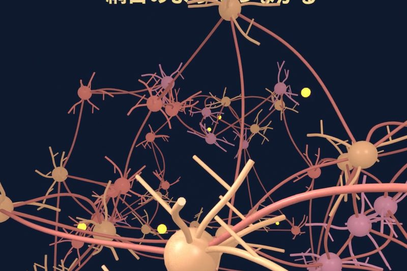
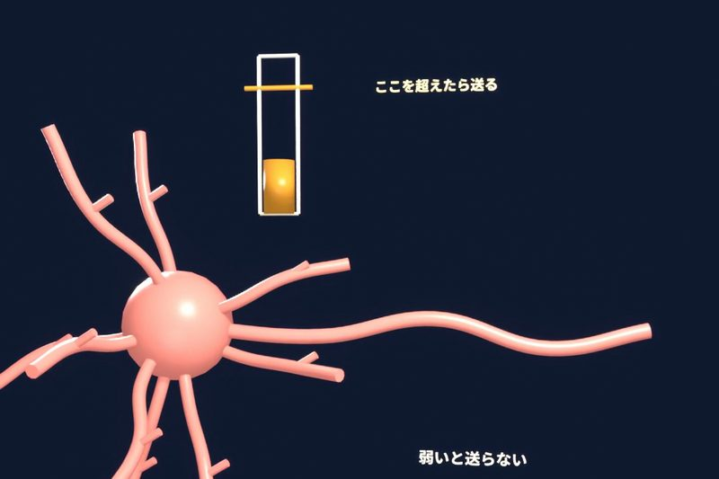
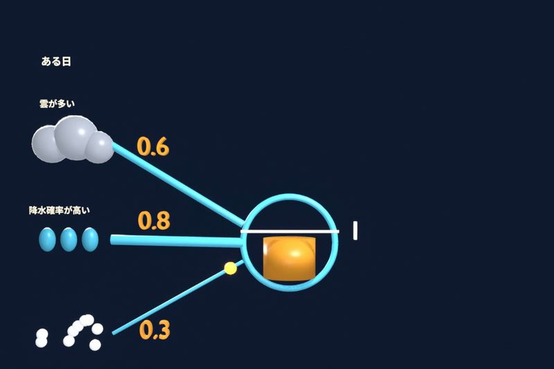
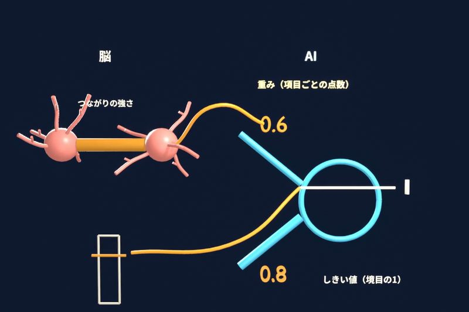
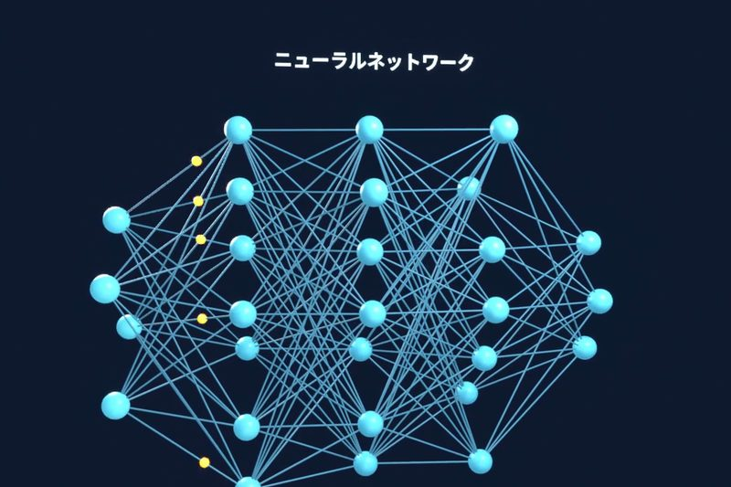

AIの中身のニューラルネットワークという仕組みは、人間の脳の神経細胞（ニューロン）をまねて作られました。ニューロンの働きと、人工ニューロンが傘を持っていくかを判断して学習する例で、仕組みを順に説明します。
人間の脳では、約860億個のニューロンがつながっている
人間の脳では、ニューロンという神経細胞が、推定で約860億個、網目のようにつながっています。ニューロンは、信号を受け取って、隣のニューロンへ伝える細胞です。

ニューロンは、合計が特定の強さを超えたときだけ信号を送る
ニューロンは、周りのニューロンから届いた信号を足し合わせます。そして、ニューロンは、合計が特定の強さを超えたときだけ、隣のニューロンへ信号を送ります。弱い信号が少し届いただけでは、ニューロンは信号を送りません。

何度も同時に働くと、つながりが強くなる
ニューロンどうしのつながりには、強いつながりと弱いつながりがあります。2つのニューロンが何度も同時に働くと、2つのニューロンのつながりが強くなり、信号が通りやすくなります。
つながりが強くなることは、学習や記憶の仕組みの一つです。この考え方は、1949年にヘッブという研究者が唱えました。
1943年、ニューロンの動きが数式になった
1943年、マカロックとピッツという研究者は、ニューロンの動きを数式で書けると考えました。マカロックとピッツの論文から生まれたのが、人工ニューロンです。
例：人工ニューロンが、傘を持っていくかを判断する
人工ニューロンの動きを、傘を持っていくかどうかの判断で見てみます。数字は、説明のために仮に決めたものです。
人工ニューロンは、3つの信号を受け取ります。信号には、それぞれ仮の点数をつけます。
- 雲が多い：0.6
- 天気予報の降水確率が高い：0.8
- 湿度が高い：0.3
人工ニューロンは、当てはまる信号の点数を足し合わせ、合計が1を超えたら「持っていく」という信号を出します。
ある日、雲が多くて、湿度も高かったとします。合計は0.6と0.3で0.9です。0.9は1に届かないので、人工ニューロンは「持っていく」という信号を出しません。
ところが、その日は雨が降りました。予測が外れたので、人工ニューロンは、予測と正解のずれが小さくなるように点数を少し直して、また予測します。予測と直しを何度も繰り返して、予測の精度を上げていくことを、AIの学習と言います。
1943年の人工ニューロンは、重みが決まったままで、学習する仕組みはまだありませんでした。重みを直して学習する形は、1957年のパーセプトロンから始まりました。

点数は「重み」、境目は「しきい値」
AIでは、信号ごとの点数を重み、境目の1をしきい値と呼びます。重みは脳のつながりの強さに、しきい値はニューロンが信号を送る境目にあたります。

人工ニューロンを何層にもつなぐと、ニューラルネットワークになる
人工ニューロンを何層にもつなぐと、AIはもっと難しいことを判断できます。人工ニューロンを何層にもつないだ仕組みが、ニューラルネットワークです。

ニューラルネットワークの研究には、2024年のノーベル物理学賞が贈られました。受賞したのは、ホップフィールドとヒントンの2人です。
AIの正体は、脳の神経回路を計算に置き換えて、ものすごい数つなげたニューラルネットワークです。ニューラルネットワークが文章や画像を作る仕組みはAIはどうやって文章や画像を作る？で、本物の脳との違いはAIと人間の脳の違いで説明しています。
出典
- ニューロンの数（推定値）：Azevedo ほか（2009）（2026-11-03 確認）
- 合計が境目に届くと信号を送る：Queensland Brain Institute、OpenStax（2026-11-03 確認）
- ヘッブの説（1949年）：ノーベル財団の解説（2026-11-03 確認）
- 1943年の人工ニューロン：McCulloch & Pitts（1943）（2026-11-05 確認）
- 誤差が小さくなる方向へ重みを直して学習する：IBM（2026-11-05 確認）
- 1957年のパーセプトロン：コーネル大学（2026-11-05 確認）
- 2024年のノーベル物理学賞：ノーベル財団の発表（2026-11-03 確認）
この記事は、短尺動画シリーズ「酒のつまみになるAI」の回を、読み物として書き直したものです。